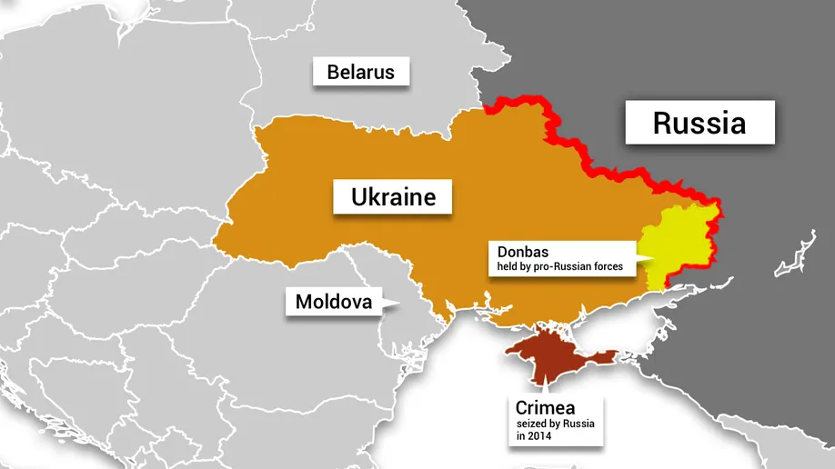

| Province | Area (Km2) | Population in million (1901) | Chief Administator | Map | ||||||
|---|---|---|---|---|---|---|---|---|---|---|
| Major Province |  | |||||||||
| Assian Provience | 13000 | 6 | Chief Commissioner | |||||||
| Bengal Presidency | 390000 | 75 | Lieutenant-Governor | |||||||
| Bombay Presidency | 32000 | 19 | Governor-in-Council | |||||||
| Central Provience and Berar | 270000 | 13 | Chief Commissioner | |||||||
| Madrass Presidency | 370000 | 38 | Governor-in-Council | |||||||
| Panjab | 250000 | 20 | Lieutenant-Governor | |||||||
| United Province | 280000 | 48 | Lieutenant-Governor | |||||||
| Major Province | ||||||||||
| Ajmer-Merwara | 7000 | 6 | ex office Chief Commissioner | |||||||
| Assian Provience | 78000 | 25 | Chief Commissioner | |||||||
| Andaman and Nikobar Islands | 4100 | 181 | ex office Chief Commissioner | |||||||